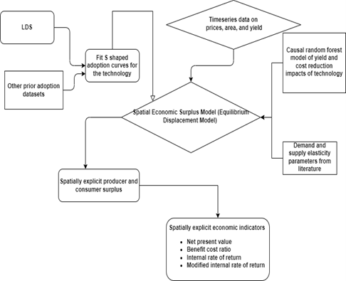

4 Spatial economic surplus and return on investments (ROI) toolkit
4.1 Discounted cash flow (DCF) economic surplus framework [Incomplete]
Purpose: Economic surplus framework is the most used approach in agricultural economics to evaluate the agricultural research benefits.
In recent years, scholars have also suggested the use of real options approach which then helps in valuing the time to wait and dynamic complexities appropriately.
Why?
· Relies on economic theory especially demand and supply as well as welfare economics
Why not?
· Given data requirements (e.g., on elasticities), the analyses are done at aggregate level (e.g., country level).
Stylized use case: Would sowing date advisories pay?
We estimate the returns on investments of early sowing advisories using the economic surplus approach.
Input data requirements: Surplus analysis approach requires data on area, yield , and output data. It also requires data on percent of area under the new technology, the supply and demand elasticities, yield gain due to the technology , price data and cost change data due to the technology.
Toolkit workflow
